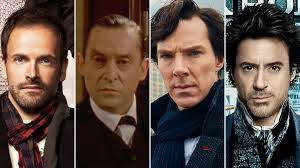

Sherlock Holmes has appeared in numerous adaptations across various media, making him one of the most portrayed literary characters of all time. He has been featured in films, television series, radio dramas, stage plays, and video games, with actors like Basil Rathbone, Jeremy Brett, and Benedict Cumberbatch bringing him to life. Modern adaptations, such as Sherlock (2010) and Elementary (2012), reimagine him in contemporary settings, while classic films and series stay true to the Victorian era. His influence extends to pastiches, parodies, and inspired works, cementing his legacy in popular culture.
